| 项目名称 | GDP0000-Litchi_chinensis-8-iTraq |
| 样品信息 | CK1 ⁄ CK2 ⁄ UF1 ⁄ UF2 ⁄ FM1 ⁄ FM2 ⁄ MA1 ⁄ MA2 |
| 样品间差异方案 | CK1 ↔ CK2 | CK1 ↔ FM1 | CK1 ↔ FM2 | CK1 ↔ MA1 | CK1 ↔ MA2 | CK1 ↔ UF1 | CK1 ↔ UF2 |
| 分组方案 | CK : CK1 & CK2 | MA : MA1 & MA2 | FM : FM1 & FM2 | UF : UF1 & UF2 |
| 分组间差异方案 | CK ↔ MA | CK ↔ FM | CK ↔ UF | FM ↔ UF |
| 蛋白定量软件 | Mascot 2.3.02 |
1）实验流程说明
|
实验流程图
|
同重同位素相对与绝对定量（Isobaric Tags for Relative and Absolute Quantitation，iTRAQ）技术 是可以在一次实验中进行多达八个样品的蛋白质组定量技术， 该定量方法几乎可以对任何蛋白样品进行定量分析， 具有高定量精度的特点，目前已经越来越广泛的应用于定量蛋白质组学领域。 iTRAQ定量蛋白质组技术自2004年在美国质谱年会第一次被提出以来，已经成为一种越来越广泛应用的定量蛋白质组技术。 在2009年，有超过150篇的研究文章采用该技术,而且逐年增加。 左图显示iTRAQ定量蛋白质组学实验的基本流程： 第一步，从样品中提取蛋白。 第二步，对提取后的蛋白样品进行还原烷基化处理，以便后续充分酶解蛋白。 第三步，用GE公司的2D-quant-kit法进行蛋白质的浓度测定。 第四步，等体积进行SDS（十二烷基磺酸钠）电泳。 第五步，酶解蛋白。 第六步，用iTRAQ试剂标记肽段。 第七步，将标记后的肽段进行等量混合。 第八步，对混合后的肽段使用强阳离子交换色谱(Strong Cation Exchange Choematography，SCX)进行预分离。 第九步，进行液相串联质谱(Liquid Chromatography Coupled with Tandem Mass Spectrometry，LC-MS/MS)分析 |
2）iTRAQ定量原理
|
iTRAQ试剂结构
|
iTRAQ试剂由报告离子（Report Group），平衡基团（Balance Group），反应基团（Peptide Reactive Group）三部分构成， 反应基团可以与肽段N-端或赖氨酸侧链发生反应，从而可以标记任何肽段。 |
|
iTRAQ定量蛋白质组学原理
|
左图显示了iTRAQ定量技术的基本原理及主要步骤， iTRAQ定量方法可以在一次串联质谱实验中同时比较8个样品中的蛋白的相对含量， 主要步骤如图中所示，分别为蛋白提取、酶解、标记、混合、SCX预分离、液相串联质谱分析。 在一级质谱时，平衡基团可以确保无论用哪种报告离子标记肽段，都显示为相同的质荷比值。 在二级质谱时，平衡基团发生中性丢失，而报告离子的强度则可以反映肽段的相对丰度值。 图中最下方为一张MS/MS谱图，横坐标为子离子质荷比值，纵坐标为离子强度。 8个彩色峰表示iTRAQ试剂的8种报告离子，其高度分别代表了肽段的相对含量，用于后续定量。 其余黑色峰为肽段碎裂后的子离子峰，用于后续鉴定。 |
利用iTRAQ技术进行蛋白质组定量的优势主要体现在：
(1) 由于试剂可以标记任何肽段，包括翻译后修饰肽段，因此可以极大的提高蛋白鉴定的可信度和覆盖度。
(2) 由于可以对一个蛋白的多个肽段进行定量，因此可以提高定量的可信度。
(3) 对于发现生物标记物，是一种高通量的研究方法。
(4) 定量精度较高。
(5) 可以在一次实验中，进行多达8个样品的比较。利用基于同一个参考样品的办法，可以进行多于8个样品的定量比较。
|
分析流程图
|
左图显示iTRAQ定量蛋白质组学的基本信息分析流程： 首先对于质谱下机的原始文件，进行峰识别，得到峰列表。 其次建立参考数据库，进行肽段及蛋白质的鉴定。 最后比较各蛋白在各样品之间的相对含量的关系，从而获得一些感兴趣的重要蛋白。 也可以将转录组数据和蛋白组数据结合起来，进行蛋白组与转录组的关联分析。 |
1）原始质谱数据
质谱文件需要转换成mgf格式后才能被使用，因此以mgf作为初始文件，mgf主要包含了二级质谱（MS/MS）谱图的信息，其基本格式如下：
BEGIN IONS TITLE=Spectrum1 scans: 2, PEPMASS=588.84003 11629.05371 CHARGE=2+ RTINSECONDS=0 SCANS=2 115.55481 258.814 116.11040 496.234 136.94980 420.235 173.90498 377.256 180.86188 368.726 190.94720 352.431 ……… END IONS
其中“BEGIN IONS”和“END IONS”是每一张谱的开始和结束位置。“TITLE”为该谱图的编号信息。
“PEPMASS”为母离子质荷比和强度值。“CHARGE”为母离子所带电荷数。
“RTINSECONDS”为保留时间。“SCANS”为扫描编号。其余各行为肽段经碎裂后的子离子的质荷比值和强度信息。
2）数据库的选择
数据库的选择是基于质谱数据的蛋白质鉴定策略中的重要一步，最终鉴定到的蛋白质序列都来源于被选择的数据库中。
目前使用到的数据库主要可以分为两类，一类是NCBI来维护的，另外一类是由EBI负责维护。数据库建立的方法主要有以下几种：
1.NCBInr全库；
2.NCBInr分类库，包括动物全库、植物全库、微生物全库、细菌全库等；
3.SwissProt/Uniprot/IPI分类库，包括动物全库、植物全库、微生物全库、细菌库等；
4.NCBInr对应物种库，包括人、玉米、对虾、大肠杆菌等；
5.其他物种库，如柑橘克里曼丁蛋白库。
在选择数据库时，遵循如下原则，若为已经测序生物，直接选用该物种数据库，若为非测序生物，则选择与被测样品最为相关的大类蛋白质组数据库。
3）Mascot搜索
Mascot 是一个蛋白质鉴定软件，曾被 Frost&Sullivan 研究机构评为生物质谱软件的黄金标准。
我们使用的软件版本为 Mascot 2.3.02。操作时需要将 mgf 文件提交至 Mascot，选择已经建立好的数据库，然后进行数据库搜索。
| Item | Value |
|---|---|
| Type of search | MS/MS Ion search |
| Enzyme | Trypsin |
| Fragment Mass Tolerance | +/- 0.05 Da |
| Mass Values | Monoisotopic |
| Variable modifications | Gln->pyro-Glu (N-term Q),Oxidation (M) |
| Peptide Mass Tolerance | 20 ppm |
| Instrument type | Triple TOF 5600 |
| Max Missed Cleavages | 1 |
| Fixed modifications | Carbamidomethyl (C),iTRAQ8plex (N-term),iTRAQ8plex (K) |
| Protein Mass | Unrestricted |
| Database | mascot_db_20150923.fa (33209 sequences) |
4）蛋白质鉴定
（1）基本鉴定信息
基本鉴定信息统计表
|
|||||||||||||||||
| 基本鉴定信息统计图 | |||||||||||||||||
上图横坐标为鉴定类别，纵坐标为数量。Total Spectra为二级谱图总数，Spectra为匹配到的谱图数量，
Unique Spectra为匹配到特有肽段的谱图数量，Peptide为鉴定到的肽段的数量，Unique Peptide为鉴定到特有肽段序列的数量，Protein为鉴定到的蛋白质数量。
（2）蛋白质相对分子质量
蛋白质质量分布表
|
|||||||||||||||||||||||||||
| 蛋白质的质量分布图 | |||||||||||||||||||||||||||
上图横坐标为鉴定到的蛋白质分子质量（单位：千道尔顿，kDa），纵坐标为鉴定到的蛋白质数量。
（3）肽段序列长度分布
| 肽段长度分布图 |
上图表示不同长度肽段占所有肽段的百分比。横坐标为肽段氨基酸残基数，纵坐标为该长度肽段占所有肽段的百分比。
（4）肽段序列覆盖度
肽段序列覆盖度分布表
|
|||||||||||||||||||||||||
| 肽段序列覆盖度分布图 | |||||||||||||||||||||||||
上图显示不同覆盖度的蛋白比例，不同颜色代表不同的序列覆盖度范围， 饼状图百分比显示了处于不同覆盖度范围的蛋白数量占总蛋白数量的比例。
（5）鉴定肽段数量分布
| 鉴定肽段数量分布图 |
上图显示鉴定到的蛋白所含肽段的数量分布情况，横坐标为鉴定蛋白的肽段数量范围，数量随着匹配肽段数量的增加而减少。
鉴定结果见 1_Identification 文件夹下 Litchi_chinensis-8-iTraq.detail.xls 与 Litchi_chinensis-8-iTraq.overall.xls 文件。
其中sample_detail.xls中包含了肽段和蛋白的信息，sample_overall.xls 中包含了蛋白的信息。
5）蛋白质注释
（1）Pathway代谢通路注释
在生物体内，不同蛋白相互协调行使其生物学行为，基于 Pathway 的分析有助于更进一步了解其生物学功能。KEGG是有关 Pathway 的主要公共数据库（Kanehisa，2008），通过 Pathway 分析能确定蛋白质参与的最主要生化代谢途径和信号转导途径。
- ◊ Pathway 分析结果报告 : Litchi_chinensis-8-iTraq.htm 表头各列含义请参考 :
- ◊ 基因 ID 及对应 KO 号列表 : Litchi_chinensis-8-iTraq.ko
- ◊ 基因的 Pathway 列表 : Litchi_chinensis-8-iTraq.path.xls
（2）GO分析
Gene Ontology（简称GO）是一个国际标准化的基因功能分类体系，提供了一套动态更新的标准词汇表（Controlled Vocabulary）来全面描述生物体中基因和基因产物的属性。GO总共有三个本体（Ontology），分别描述基因的分子功能（Molecular Function）、所处的细胞位置（Cellular Component）、参与的生物过程（Biological Process）。
详细信息见网站：http://www.geneontology.org
我们针对鉴定出的所有蛋白进行GO功能注释分析，给出的结果包括两部分：protein2go和go2protein。
protein2go：针对每个蛋白，给出所有相应的GO功能的ID列表
go2protein：针对三个ontology（cellular component，biological process，molecular function）中所涉及的GO 条目，
列出所有相应的蛋白的ID及蛋白个数，同时作出统计图，略去没有相应蛋白的GO 条目。
| 所有蛋白的GO分类图 |
GO分类图显示了三个本体中所涉及到各条目的分布情况。
- ◊ GO 注释表 : Litchi_chinensis-8-iTraq.wego.xls
| Protein ID | GO ID | ||||
|---|---|---|---|---|---|
| Unigene0000194 | GO:0044424 | ||||
| Unigene0000198 | GO:0043231 | GO:0016616 | GO:0044710 | GO:0000166 | |
| Unigene0000291 | GO:0016646 | GO:0019852 | GO:0016639 | GO:0044444 | ... |
| Unigene0000293 | GO:0016811 | ||||
| Unigene0000389 | GO:0019787 | GO:0032446 | |||
- ◊ GO 分类表 : Litchi_chinensis-8-iTraq.go.xls
3）COG/KOG注释
COG（Cluster of Orthologous Groups of Proteins 蛋白相邻类的聚簇）是对蛋白质进行直系同源分类的数据库。构成每个 COG 的蛋白都是被假定为来自于一个祖先蛋白，并且因此或者是 Orthologs 或者是 Paralogs。Orthologs 是指来自于不同物种的由垂直家系（物种形成）进化而来的蛋白，并且典型的保留与原始蛋白有相同的功能。Paralogs 是那些在一定物种中的来源于基因复制的蛋白，可能会进化出新的与原来有关的功能。我们将鉴定到的和 COG 数据库进行比对，预测这些蛋白可能的功能并对其做功能分类统计。
原核生物用 COG 注释，真核生物用 KOG 注释
| 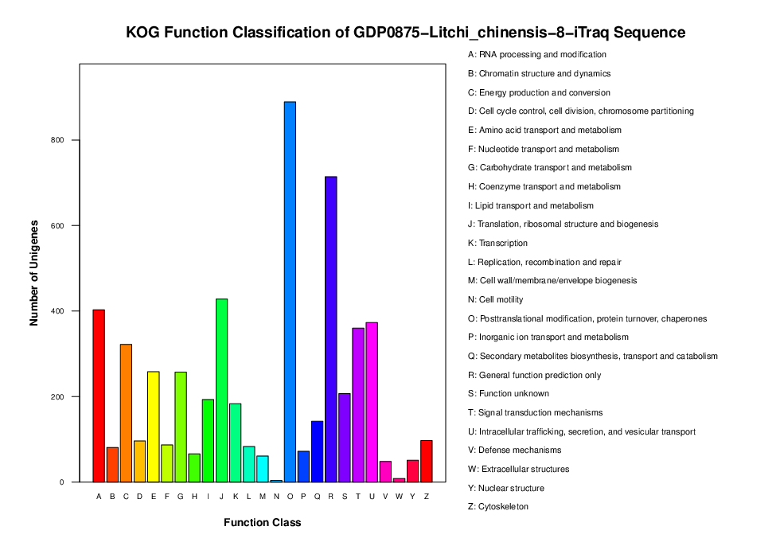 |
| kog 功能分类图 |
- ◊ kog 分类表 : Litchi_chinensis-8-iTraq.kog.class.annot.xls
- ◊ kog 注释表 : Litchi_chinensis-8-iTraq.kog.gene.annot.xls
- ◊ blast 比对 kog 结果表 : Litchi_chinensis-8-iTraq.blast.kog.xls
6）蛋白质定量
（1）实验标记信息
| 样品编号 | 标记编号 |
|---|---|
| CK1 | 113 |
| CK2 | 114 |
| UF1 | 115 |
| UF2 | 116 |
| FM1 | 117 |
| FM2 | 118 |
| MA1 | 119 |
| MA2 | 121 |
（2）总体定量统计
- ◊ 总体蛋白定量统计注释表 : All_Exp.annot.xls
7）差异蛋白分析
（1）差异蛋白统计
样品间差异蛋白统计表
|
||||||||||||||||||||||||||||
| 样品间差异蛋白数量统计图 | ||||||||||||||||||||||||||||
上图横坐标为样品间比较名称，纵坐标为差异蛋白数量。红柱表示上调的蛋白数量，绿色柱表示下调的蛋白数量。
| 样品间差异 | 样品间差异蛋白注释表 | 样品间比较 Mascot 分析结果 |
|---|---|---|
| CK1-VS-CK2 | CK1-VS-CK2.annotation.xls | CK1-VS-CK2.mascot.xls |
| CK1-VS-FM1 | CK1-VS-FM1.annotation.xls | CK1-VS-FM1.mascot.xls |
| CK1-VS-FM2 | CK1-VS-FM2.annotation.xls | CK1-VS-FM2.mascot.xls |
| CK1-VS-MA1 | CK1-VS-MA1.annotation.xls | CK1-VS-MA1.mascot.xls |
| CK1-VS-MA2 | CK1-VS-MA2.annotation.xls | CK1-VS-MA2.mascot.xls |
| CK1-VS-UF1 | CK1-VS-UF1.annotation.xls | CK1-VS-UF1.mascot.xls |
| CK1-VS-UF2 | CK1-VS-UF2.annotation.xls | CK1-VS-UF2.mascot.xls |
分组间差异蛋白统计表
|
|||||||||||||||||||
| 分组间差异蛋白数量统计图 | |||||||||||||||||||
上图横坐标为分组间比较名称，纵坐标为差异蛋白数量。红柱表示上调的蛋白数量，绿色柱表示下调的蛋白数量。
| 样品间差异 | 样品间差异蛋白注释表 |
|---|---|
| CK-VS-MA | CK-VS-MA.annotation.xls |
| CK-VS-FM | CK-VS-FM.annotation.xls |
| CK-VS-UF | CK-VS-UF.annotation.xls |
| FM-VS-UF | FM-VS-UF.annotation.xls |
（2）差异蛋白Pathway富集分析
Pathway 显著性富集分析方法是以 KEGG Pathway 为单位，应用超几何检验，找出与所有鉴定到蛋白背景相比，在差异蛋白中显著性富集的 Pathway。通过 Pathway 显著性富集能确定差异蛋白参与的最主要生化代谢途径和信号转导途径。
上图为富集分析结果的示例截图。
| 样品间差异 | KO 富集结果 | KO 对应表 | Pathway 对应表 | KEGG 富集图 |
|---|---|---|---|---|
| CK1-VS-CK2 | CK1-VS-CK2.htm | CK1-VS-CK2.ko | CK1-VS-CK2.path.xls | 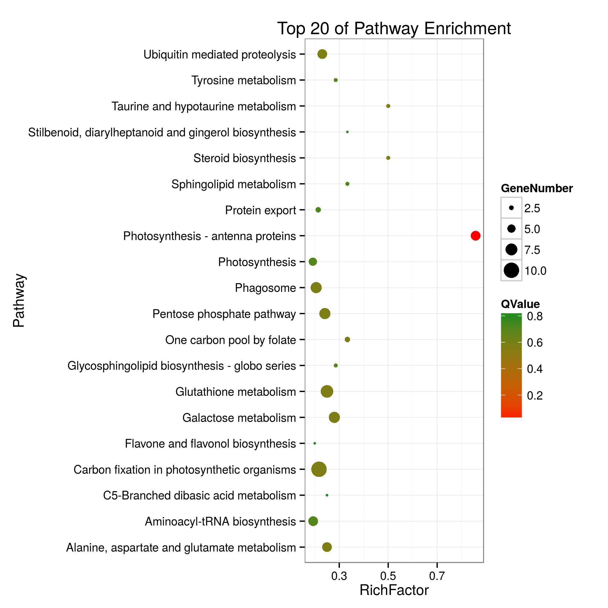 |
| CK1-VS-FM1 | CK1-VS-FM1.htm | CK1-VS-FM1.ko | CK1-VS-FM1.path.xls |  |
| CK1-VS-FM2 | CK1-VS-FM2.htm | CK1-VS-FM2.ko | CK1-VS-FM2.path.xls | 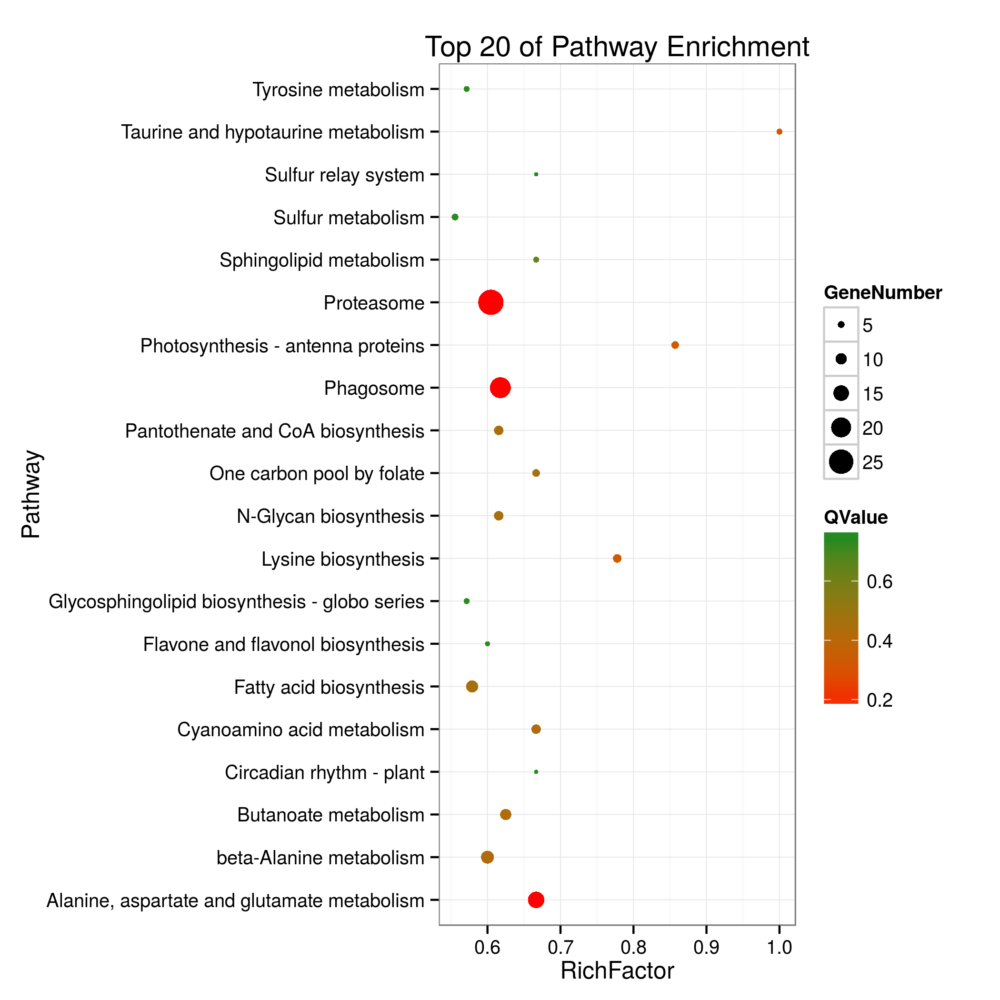 |
| CK1-VS-MA1 | CK1-VS-MA1.htm | CK1-VS-MA1.ko | CK1-VS-MA1.path.xls | 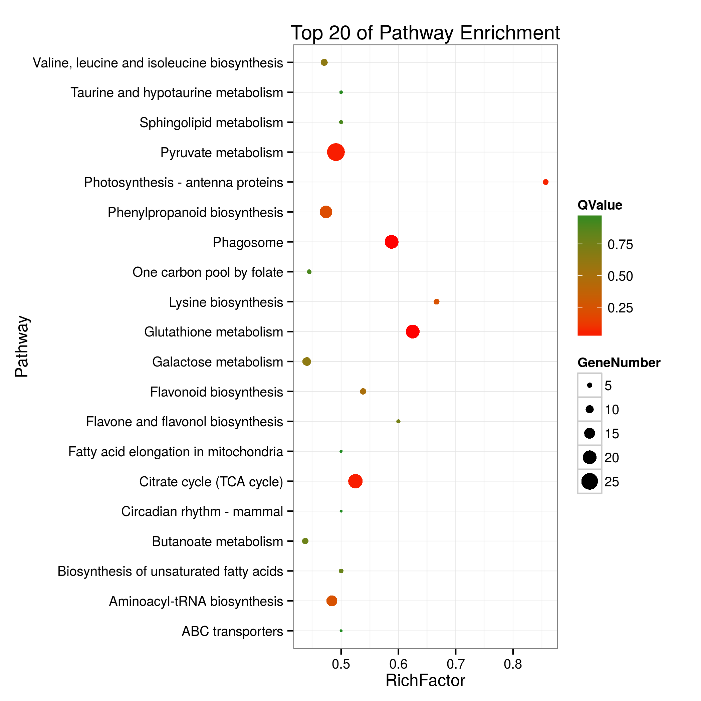 |
| CK1-VS-MA2 | CK1-VS-MA2.htm | CK1-VS-MA2.ko | CK1-VS-MA2.path.xls | 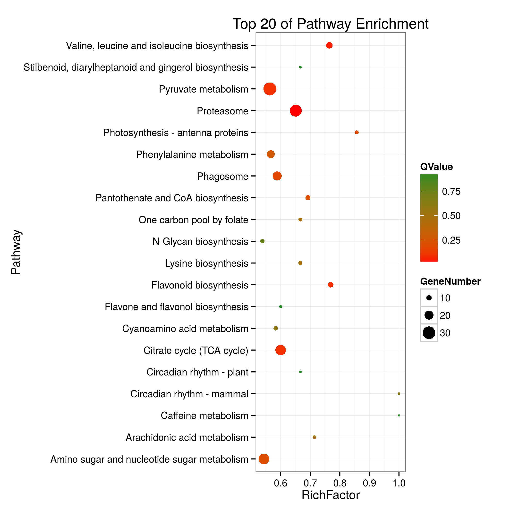 |
| CK1-VS-UF1 | CK1-VS-UF1.htm | CK1-VS-UF1.ko | CK1-VS-UF1.path.xls | 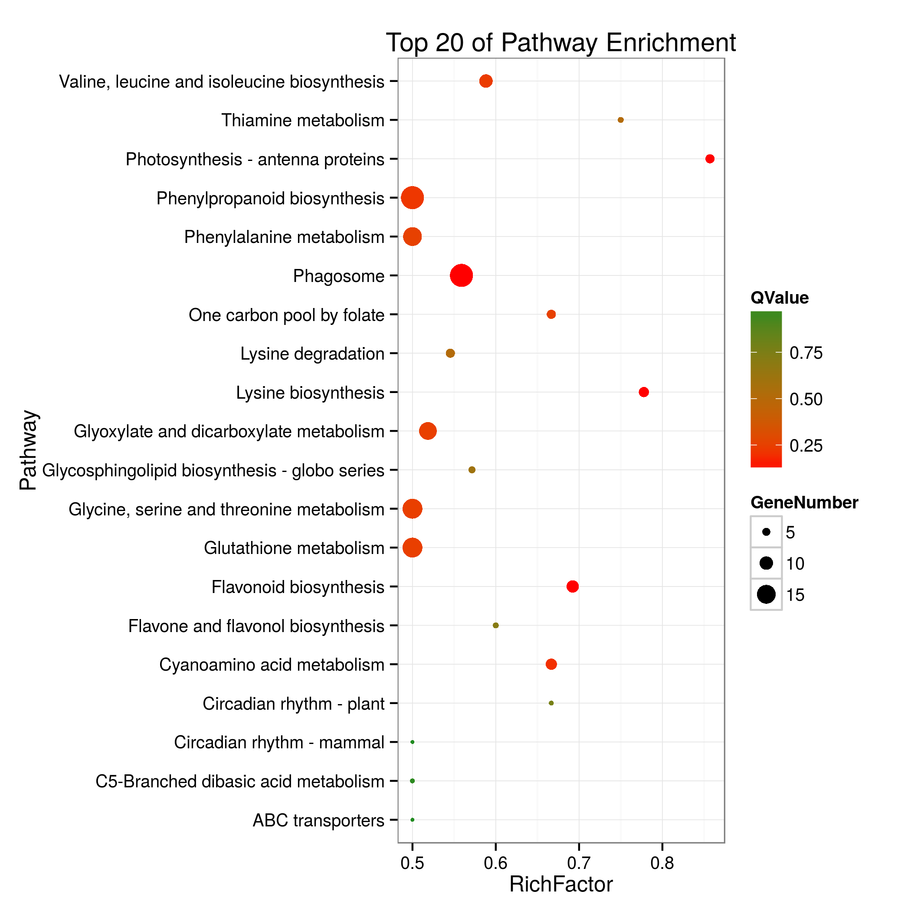 |
| CK1-VS-UF2 | CK1-VS-UF2.htm | CK1-VS-UF2.ko | CK1-VS-UF2.path.xls | 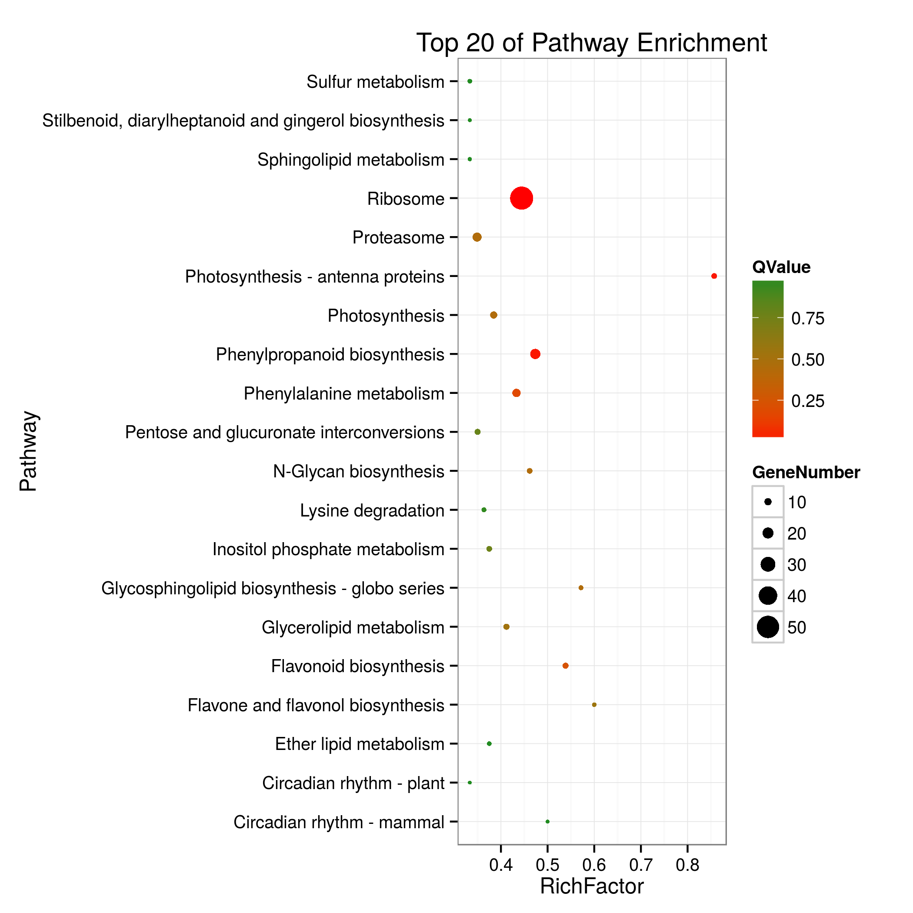 |
| 分组间差异 | KO 富集结果 | KO 对应表 | Pathway 对应表 | KEGG 富集图 |
|---|---|---|---|---|
| CK-VS-MA | CK-VS-MA.htm | CK-VS-MA.ko | CK-VS-MA.path.xls | 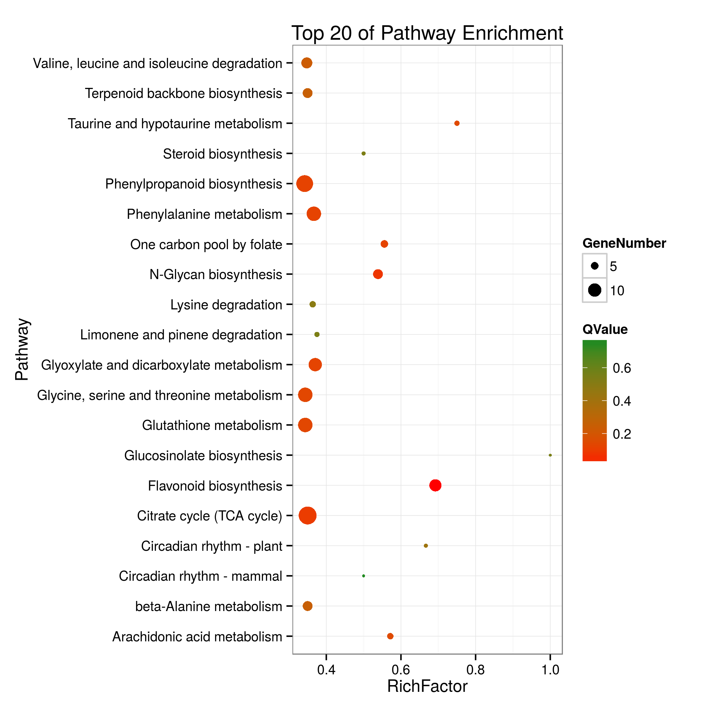 |
| CK-VS-FM | CK-VS-FM.htm | CK-VS-FM.ko | CK-VS-FM.path.xls | 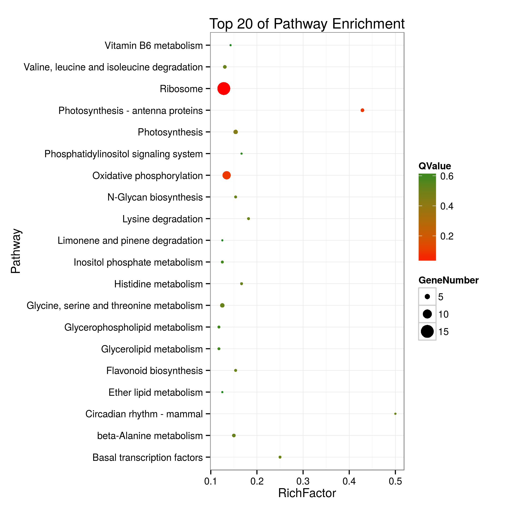 |
| CK-VS-UF | CK-VS-UF.htm | CK-VS-UF.ko | CK-VS-UF.path.xls | 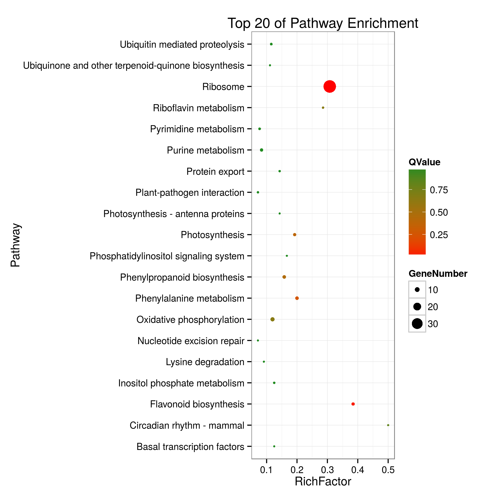 |
| FM-VS-UF | FM-VS-UF.htm | FM-VS-UF.ko | FM-VS-UF.path.xls |  |
（3）差异蛋白GO富集分析
GO功能显著性富集分析给出与所有鉴定到的蛋白质背景相比，差异蛋白质中显著富集的GO功能条目，从而给出差异蛋白质与哪些生物学功能显著相关。
当蛋白的丰度比即差异倍数达到1.5倍以上，且经统计检验其p-value值小于0.05时，视该蛋白为不同样品间的差异蛋白。
该分析首先把所有差异蛋白质向 Gene Ontology 数据库（http://www.geneontology.org/）的各个 term 映射，计算每个 term 的蛋白质数目，然后应用超几何检验，找出与所有蛋白质背景相比，在差异蛋白质中显著富集的 GO 条目。其计算公式为：
其中N为所有蛋白中具有GO 注释信息的蛋白数目，n为N中差异蛋白的数目，M为所有蛋白中注释到某个GO 条目的蛋白数目，m为注释到某个GO 条目的差异蛋白数目。/p<>
计算得到P-value值，以P-value≤0.05为阈值，满足此条件的GO term定义为在差异蛋白质中显著富集的GO term。通过GO显著性分析能确定差异蛋白性行使的主要生物学功能。
上图为 GO 富集分析结果的截图。Gene Onltolgy term 为 GO 条目。Cluster frequency 为注释到该条目的差异蛋白与注释到所有 GO 条目的差异蛋白的数量和比值。Protein frequency of use为注释到该条目的所有蛋白与注释到所有 GO 条目的所有蛋白的数量和比值。P-value 为通过超几何检验计算得到 P-value值。
| 样品间差异 | GO 细胞组分(C) 富集结果 | GO 分子功能(F) 富集结果 | GO 生物过程(P) 富集结果 | GO 注释分类表 | GO 功能分类图 |
|---|---|---|---|---|---|
| CK1-VS-CK2 | CK1-VS-CK2_C.html | CK1-VS-CK2_F.html | CK1-VS-CK2_P.html | CK1-VS-CK2.go.class.xls | 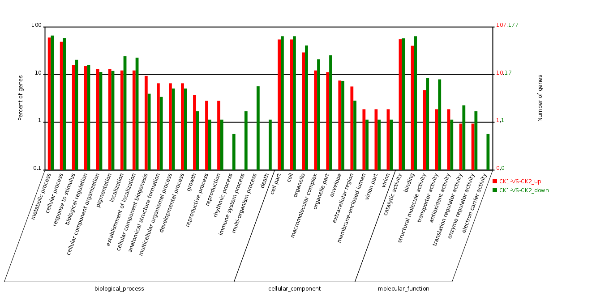 |
| CK1-VS-FM1 | CK1-VS-FM1_C.html | CK1-VS-FM1_F.html | CK1-VS-FM1_P.html | CK1-VS-FM1.go.class.xls | 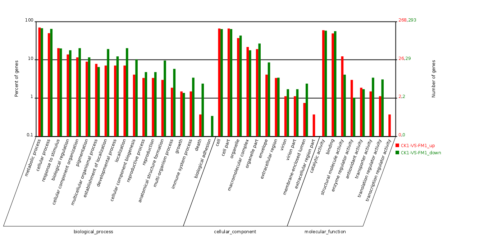 |
| CK1-VS-FM2 | CK1-VS-FM2_C.html | CK1-VS-FM2_F.html | CK1-VS-FM2_P.html | CK1-VS-FM2.go.class.xls | 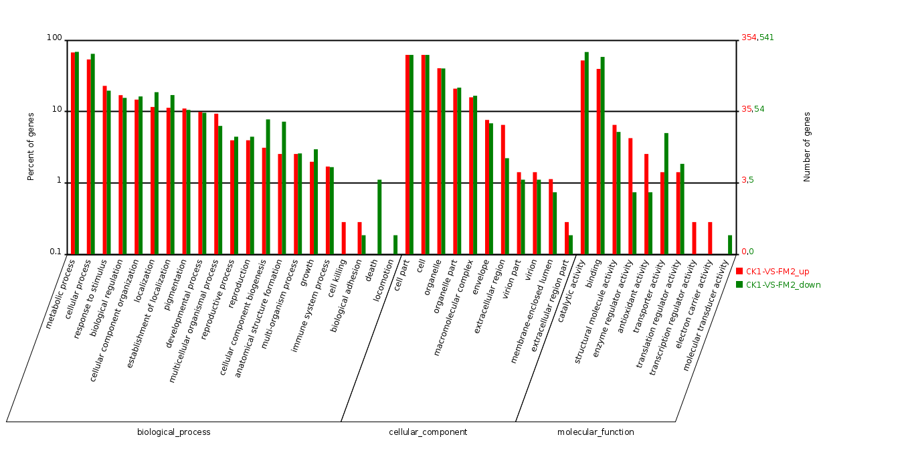 |
| CK1-VS-MA1 | CK1-VS-MA1_C.html | CK1-VS-MA1_F.html | CK1-VS-MA1_P.html | CK1-VS-MA1.go.class.xls | 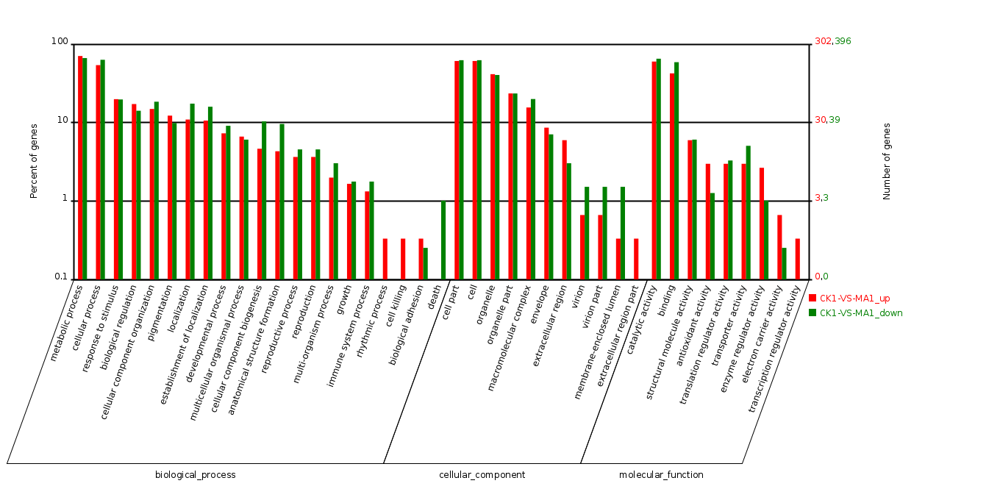 |
| CK1-VS-MA2 | CK1-VS-MA2_C.html | CK1-VS-MA2_F.html | CK1-VS-MA2_P.html | CK1-VS-MA2.go.class.xls | 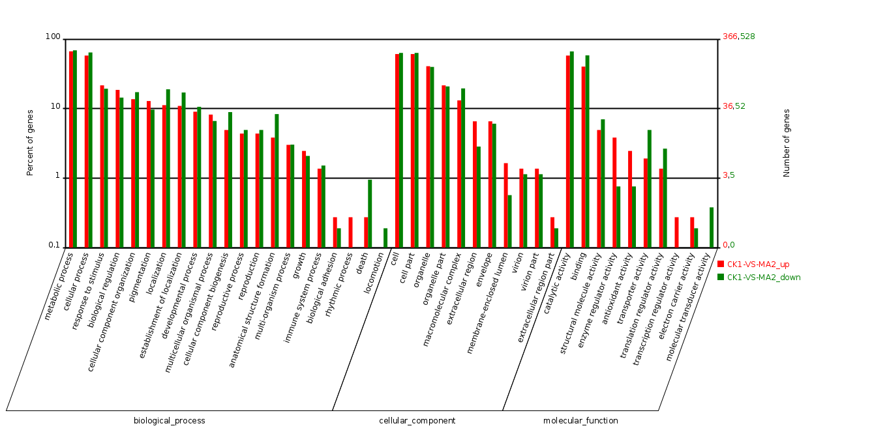 |
| CK1-VS-UF1 | CK1-VS-UF1_C.html | CK1-VS-UF1_F.html | CK1-VS-UF1_P.html | CK1-VS-UF1.go.class.xls | 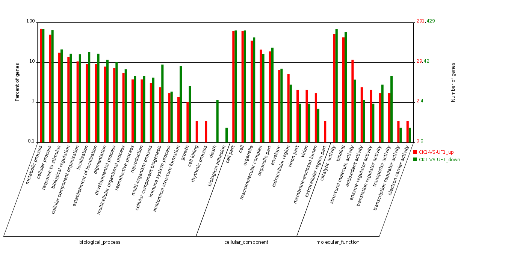 |
| CK1-VS-UF2 | CK1-VS-UF2_C.html | CK1-VS-UF2_F.html | CK1-VS-UF2_P.html | CK1-VS-UF2.go.class.xls | 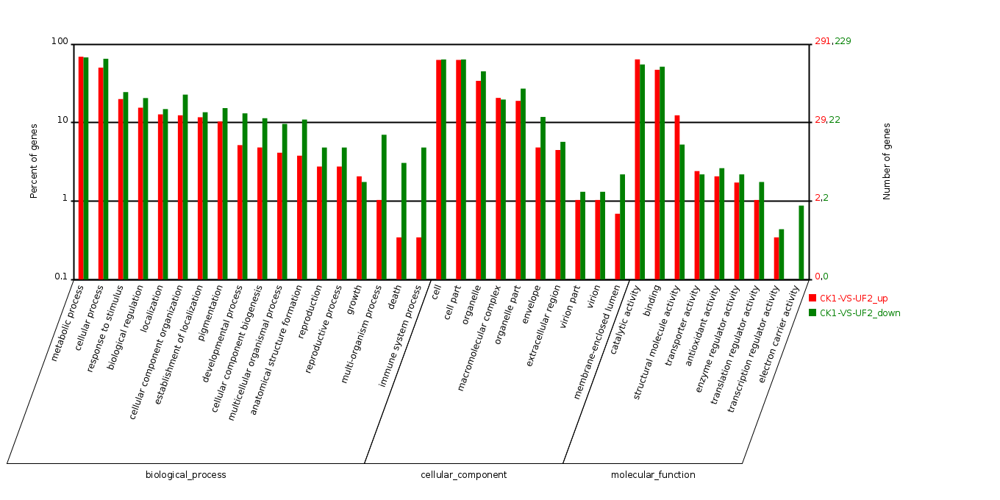 |
| 分组间差异 | GO 细胞组分(C) 富集结果 | GO 分子功能(F) 富集结果 | GO 生物过程(P) 富集结果 | GO 注释分类表 | GO 功能分类图 |
|---|---|---|---|---|---|
| CK-VS-MA | CK-VS-MA_C.html | CK-VS-MA_F.html | CK-VS-MA_P.html | CK-VS-MA.go.class.xls | |
| CK-VS-FM | CK-VS-FM_C.html | CK-VS-FM_F.html | CK-VS-FM_P.html | CK-VS-FM.go.class.xls | 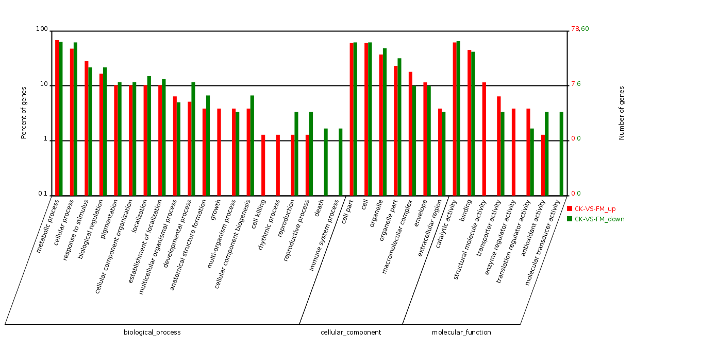 |
| CK-VS-UF | CK-VS-UF_C.html | CK-VS-UF_F.html | CK-VS-UF_P.html | CK-VS-UF.go.class.xls | 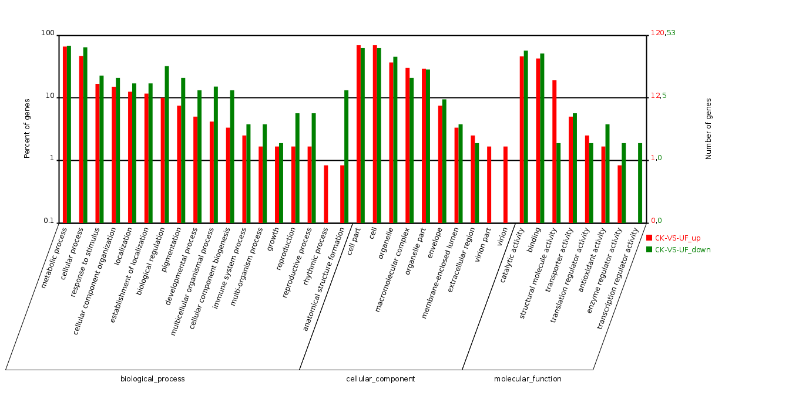 |
| FM-VS-UF | FM-VS-UF_C.html | FM-VS-UF_F.html | FM-VS-UF_P.html | FM-VS-UF.go.class.xls | 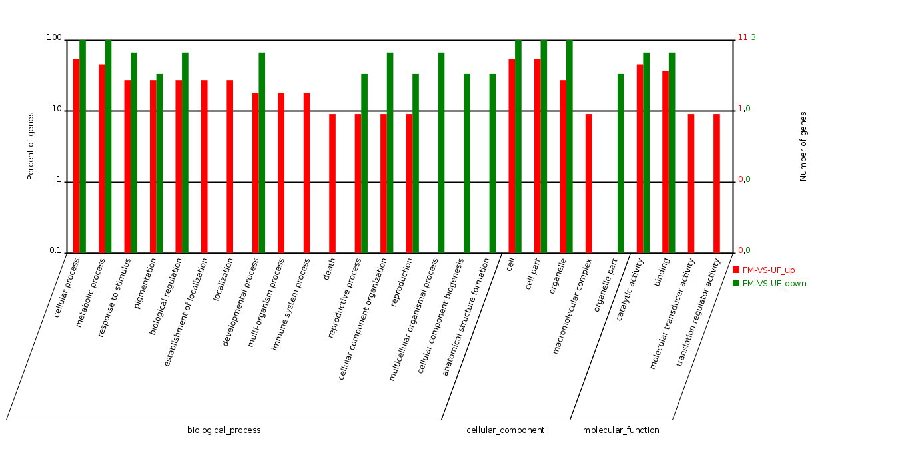 |
1）文件下载及解压
所有文件被压缩成*.tar.gz格式，可以采取如下解压方式：
Unix/Linux用户： tar �Czxvf *.tar.gz or gzip �Cd *.gz。
Windows用户：推荐使用winRAR进行。
Mac 用户： shell: tar �Czxvf *.tar.gz。
2）蛋白鉴定及定量
上图为iTRAQ定量分析报告中的*_detail.xlsx中表格信息，每列的说明信息如下表：
| 列名 | 描述 |
|---|---|
| GroupId | 蛋白质分组号，分组号相同的蛋白共享肽段及定量信息 |
| Hit_number | Mascot搜索结果中的分组号，为不连续编号 |
| Accession | 蛋白质accession number |
| Description | 蛋白质描述信息 |
| Score | 蛋白质的鉴定得分 |
| Mass | 蛋白质质量 |
| Cov | 蛋白的序列覆盖度情况 |
| Seq | 蛋白序列 |
| SameSets | 与该蛋白鉴定到完全相同肽段的蛋白的数量 |
| Sepectra number | 匹配到该蛋白的谱的数量 |
| Unique peptide number | 匹配到该蛋白的unique肽段数量 |
| Peptide | 匹配到该蛋白的肽段序列数量 |
| Unique Peptide | 匹配到该蛋白的unique肽段序列数量 |
| 118/114 | 该蛋白在两个样品间表达量的比值，即差异倍数 |
| Quant Number | 用于该蛋白定量的肽段数量 |
| Sig | 统计检验其表达量与1是否有统计学差异，1表示有统计学差异 |
| …… | …… |
| Query | 蛋白的肽段谱图编号 |
| Isunique | 表示该谱图是否是unique肽段，1为unique，0为非unique |
| Exp_mz | 实验测得的肽段的质荷比值 |
| Exp_mr | 实验测得的肽段的分子量 |
| Exp_z | 肽段的电荷量 |
| Calc_mr | 理论计算得到的肽段分子量 |
| Delta | 肽段的实验分子量与理论分子量的差值 |
| Start | 该谱匹配到的肽段在蛋白序列中的起始位置 |
| End | 该谱匹配到的肽段在蛋白序列中的结束位置 |
| Miss | 肽段酶切时的漏切个数 |
| Score | 肽段得分 |
| Ident | 肽段的鉴定得分阈值 |
| Before | 位于肽段之前的第一个氨基酸 |
| Pep_seq | 肽段序列 |
| After | 位于肽段之后的第一个氨基酸 |
| Pep_var_mod | 肽段的修饰方式 |
3）GO功能注释
GO 分类表每列的说明信息如下：
| 列名 | 描述 |
|---|---|
| Ontology | GO本体的类别 (biological_process 或 cellular_component 或 molecular_function) |
| Class | GO条目 |
| number_of_* | 注释到各GO条目中的蛋白质数量 |
| Proteins_of_* | 注释到各GO条目蛋白质ID |
4）COG/KOG功能注释
COG/KOG 分类表每列的说明信息如下：
| 列名 | 描述 |
|---|---|
| Code | COG/KOG 功能代号 |
| Functional-Categories | COG/KOG 功能分类 |
| Protein-Number | 蛋白质 在各 COG/KOG 功能分类的数量 |
| Proteins | 蛋白质 在各 COG/KOG 功能分类的序列ID |
COG/KOG 注释表每列的说明信息如下：
| 列名 | 描述 |
|---|---|
| Protein | 蛋白质 序列的名称 |
| Protein-or-Domain | 比对上的蛋白或结构域 |
| Score | blast比对的得分 |
| E-Value | blast比对的Evalue |
| COG/KOG-ID | COG/KOG 的ID |
| Function-Description | 功能描述 |
| Code | COG/KOG 功能代号 |
| Functional-Categories | COG/KOG 功能分类 |
5）Pathway功能注释
Pathway 表每列的说明信息如下：
| 列名 | 描述 |
|---|---|
| KEGG_A_Class | KEGG A 级分类 |
| KEGG_B_Class | KEGG B 级分类 |
| Pathway | 通路名 （KEGG C 级分类） |
| Count | 注释到该通路的蛋白质的数目 |
| Pathway ID | KEGG数据库中的Pathway ID |
| Proteins | 注释到该Pathway的蛋白 |
| KOs | 属于该Pathway的KEGG Orthology |
*.htm 为蛋白的Pathway分析结果文件，说明信息如下：
| 列名 | 描述 |
|---|---|
| Pathway | 通路名，点击可看到注释到该通路的各蛋白质情况及Pathway图 |
| Proteins with pathway annotation | 鉴定的蛋白质注释到该通路的数目及比例 |
| Pathway ID | KEGG数据库中的Pathway ID |
6）差异蛋白的GO富集分析
GOView.html为差异蛋白质GO功能富集分析结果报告，左侧导航页面分别描述了如下信息：
| 文件名 | 描述 |
|---|---|
| *_diff_C | 其中差异蛋白质的Go-CellularComponent分析结果 |
| *_diff_F | 其中差异蛋白质的Go-MolecularFunction分析结果 |
| *_diff_P | 其中差异蛋白质的Go-BiologicalProcess分析结果 |
网页内右侧框架内表格说明信息如下：
| 列名 | 描述 |
|---|---|
| Gene Ontology term | GO term名 |
| Cluster frequency | 注释该GO term的差异蛋白质与注释到所有GO term的差异蛋白质比值 |
| Protein frequency of use | 注释该GO term 的所有蛋白质与注释到所有GO term的所有蛋白质的比值 |
| Corrected P-value | 通过超几何检验计算得到P-value值，当该值<0.05时，定义为在差异蛋白质中显著富集的GO term |
7）差异蛋白的Pathway富集分析
*.htm 为差异蛋白的Pathway富集分析结果文件，说明信息如下：
| 列名 | 描述 |
|---|---|
| Pathway | 通路名，点击可看到注释到该通路的各蛋白质情况及Pathway图 |
| Diff Proteins with pathway annotation | 鉴定的差异蛋白质注释到该通路的数目及比例 |
| Proteins with pathway annotation | 鉴定的蛋白质注释到该通路的数目及比例 |
| P-value | 通过超几何检验计算得到p-value值，当该值<0.05时，定义为在差异蛋白质中显著富集的Pathway |
| Pathway ID | KEGG数据库中的Pathway ID |
- 1. R. S. Johnson and J. A. Taylor (2002). Searching sequence databases via de novo peptide sequencing by tandem mass spectrometry. Mol. Biotechnology. Vol. 22, No. 3. (November 2002), pp. 301-315.
- 2. J. A. Taylor and R. S. Johnson (2000). Implementation and uses of automated de novo peptide sequencing by tandem mass spectrometry. Anal. Chem. 73:2594-2604.
- 3. R. S. Johnson and J. A. Taylor (2000). Searching sequence databases via de novo peptide sequencing by tandem mass spectrometry. Methods in Molecular Biology series, Humana Press.
- 4. J. A. Taylor and R. S. Johnson (1997). Searching sequence databases via de novo peptide sequencing by tandem mass spectrometry. Rapid Comm. Mass Spec. 11:1067-1075.
- 5. Frank, A.M. Predicting Intensity Ranks of Peptide Fragment Ions. J. Proteome Research. 8:2226-2240, 2009.
- 6. Frank, A.M. Ranking-Based Scoring Models for Peptide-Spectrum Matches. J. Proteome Research. 8:2241-2252, 2009.
- 7. Ari M. Frank, Mikhail M. et al. De Novo Peptide Sequencing and Identification with Precision Mass Spectrometry. J. Proteome Res. 6:114-123, 2007.
- 8. Frank, A. and Pevzner, P. PepNovo: De Novo Peptide Sequencing via Probabilistic Network Modeling. Analytical Chemistry. 77:964-973, 2005.
- 9. Frank A, Tanner S, Bafna V, Pevzner P.. Peptide sequence tags for fast database search in mass-spectrometry. J Proteome Res. 2005 Jul-Aug;4(4):1287-95.
- 10. Ari Frank, Stephen Tanner, and Pavel Pevzner. Peptide Sequence Tags for Fast Database Search in Mass Spectrometry. Conference on Research in Computational Molecular Biology (RECOMB) 2005.